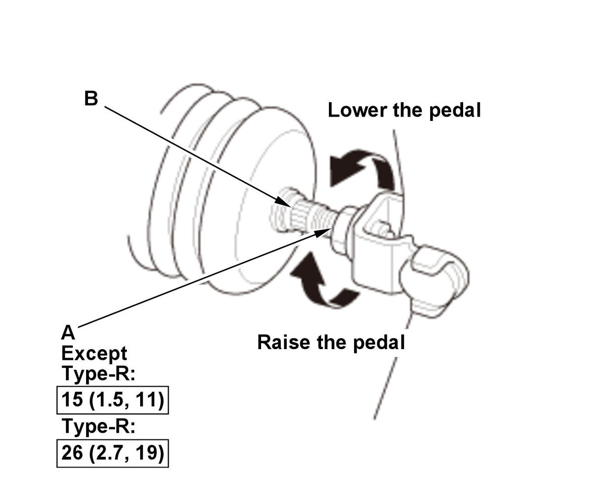

Brake Pedal and Brake Pedal Position Switch Adjustment: Adjustment
NOTE: How to read the torque specifications .
- Steering Joint Cover - Remove
- Brake Pedal Height - Inspect
M/T CVT
1. Pull back the carpet, and find the cutout (A) in the insulation. 2. Measure the pedal height (B) from the left side middle of the pedal pad (C) to the tab (D) on the floor without the insulation.
Standard pedal height: M/T: 219 +/- 5 mm (8.62 +/- 0.20 in) CVT: 212 +/- 5 mm (8.35 +/- 0.20 in) - Brake Pedal - Adjust
1. Turn the brake pedal position switch (A) 45° counterclockwise, and pull it back until it is no longer touching the brake pedal (B). 
Courtesy of HONDA, U.S.A., INC.2. Loosen the pushrod locknut (A). 3. Screw the pushrod (B) in or out with pliers until the standard pedal height from the floor is reached.
NOTE: Do not adjust the pedal height with the pushrod pressed.
4. Tighten the locknut firmly.
- Brake Pedal Position Switch - Adjust
1. Lift up on the brake pedal by hand. 2. Push in the brake pedal position switch (A) until its plunger is fully pressed (threaded end (B) touching the pad (C) on the pedal arm).
3. Turn the switch 45° clockwise to lock it. The gap between the brake pedal position switch and the pad is automatically adjusted to 0.7 mm (0.028 in) by locking the switch.
4. Make sure the brake lights go off when the pedal is released.
- Brake Pedal Free Play - Check
1. Turn the vehicle to the OFF (LOCK) mode. 2. Inspect the free play (A) at the brake pedal pad (B) by pushing the brake pedal by hand. If the brake pedal free play is out of specification, adjust the brake pedal position switch (C). If the brake pedal free play is insufficient, it may result in brake drag.
Free play: 1-5 mm (0.04-0.20 in) - Steering Joint Cover - Install